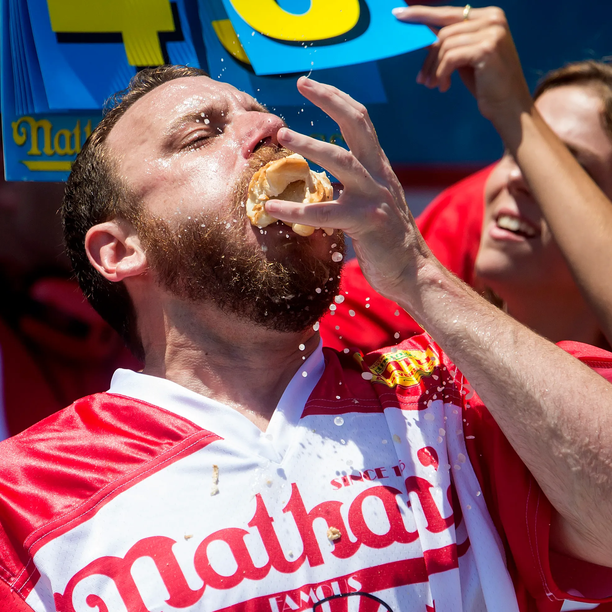

I chose the Puppy Bowl as my favorite sport to watch because I think puppies are cute. They are very energetic and always try their best, the perfect combination for a winning sports team. If you don't really enjoy watching regular human sports, you will enjoy watching puppies. Oher than that I included, "Shuffleboard, Online Poker", and, "Hot Dog Eating Contests", as my other favorites, because I find sports incredibly boring and a waste of time, so I tried to comeup with the most ridiculous sports that I could think of.
